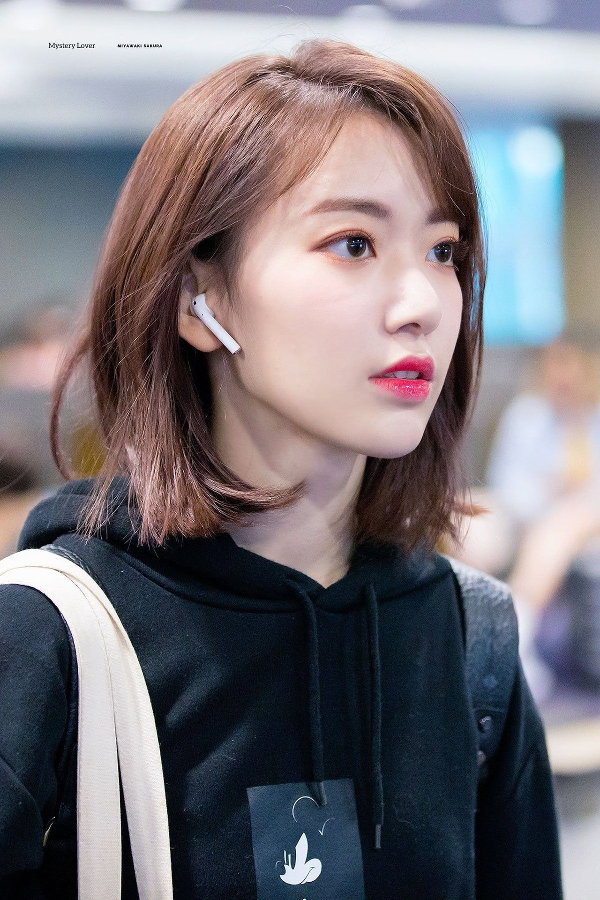

Seth Jade - Grey Wolf
Founder of The
Akatsuki
and new CEO of
Telstra

I'm from Türkiye. I am an alien. I wish for the extinction of all life. I only like Korean girls. I want to be thrown into the lethal vacuum of space so I can make my way to planet Korea. I despise weakness. My girlfriend Minji is from Seoul, Korea. We study together at our university. I consider myself the most devoted supporter of George Bush. I am the servant of marriland. My favorite idol is Sakura Miyawaki. I plan to do a masters in space technology in Paris before returning to Melbourne to launch a space based startup. I am quite shy and an introvert.
Employment
-
Part-time job : Crew-member at Starbuck's (august 2022-now) - a well renowned and established global brand
Education
-
Melbourne High School - an elite selective school
-
Monash University (Aerospace
Engineering and Commerce) - ranked in the top 50 universities globally (Times Higher Education World University Rankings 2023)
Hobbies
-
Playing
Table Tennis competitively (A grade competitions)
-
Snow sports club Monash University
- Playing Piano and doing exams
- Playing Flute and doing exams
-
Studying
Programming
: Web Development (Javascript), Game Development (C++), IOS and Android Development (Flutter), Desktop App Development (Java) and other programming languages (Python and Ruby)
-
Photography
for leisure
-
Listening to
k-pop
-
Playing on my
Playstation 5
-
Watching k-dramas on Netflix
Volunteer and Community Work
| Dates |
Volunteer and Community Work |
| 2016 |
Volunteer at Red Cross Red Shield Appeal |
| 2016 |
Volunteer at Cancer Council Relay For Life |
| 2016 |
Volunteer at Charity Shop |
| Number of Volunteer or Community Jobs |
3 jobs |
Professional Development
| Dates |
Professional Development Certificates |
| 2018 |
Barista Essentials at Boston Training and Professional Development
|
| 2018 |
Introduction to Photography level 1 |
| Number of Professional Development Certificates |
2 certificates |
Skills
| Web Development |
⭐⭐⭐ |
| Table Tennis |
⭐⭐⭐⭐⭐ |
| Snow Sports |
⭐ |
|
| Flute |
⭐⭐⭐ |
| Photography |
⭐⭐ |
| Part-time work |
⭐⭐⭐⭐ |
|
Languages
-
English (native)
-
中文 (fluent)
-
Français (fluent)
-
日本語 (advanced)
-
Espanol (beginner)
-
Türkce (native)
I have a cat (her name is Minjeong). I like using plus 500 to invest in shares and I am aiming to reach 200 billion dollars in net worth. I admire Elon Musk for his wealth and want to become like him. He's my idol. My current net worth is 750 million USD. I like to buy luxuries (properties, planes and other things I like) extravagantly with my money. I own a resort tower in the city which has a private cinema, golf course, casino, tennis court, pool area, gaming lounge and animal lounge among others. My pet chimpanzee (Timothy) lives there along with some lionfish which I modified to float in the air. I own six large properties (one of which is a large mansion where I live near the beach). My pet cat Minjeong lives in my house and I like feeding and petting other cats at the cat cafe in the city. I am renting out four smaller properties to people in need of housing. I am a philanthrophist also. I also possess a large inheritance. I like spending money extravagantly with my friends from Paris like Chloé who I drink wine with on special occasions.